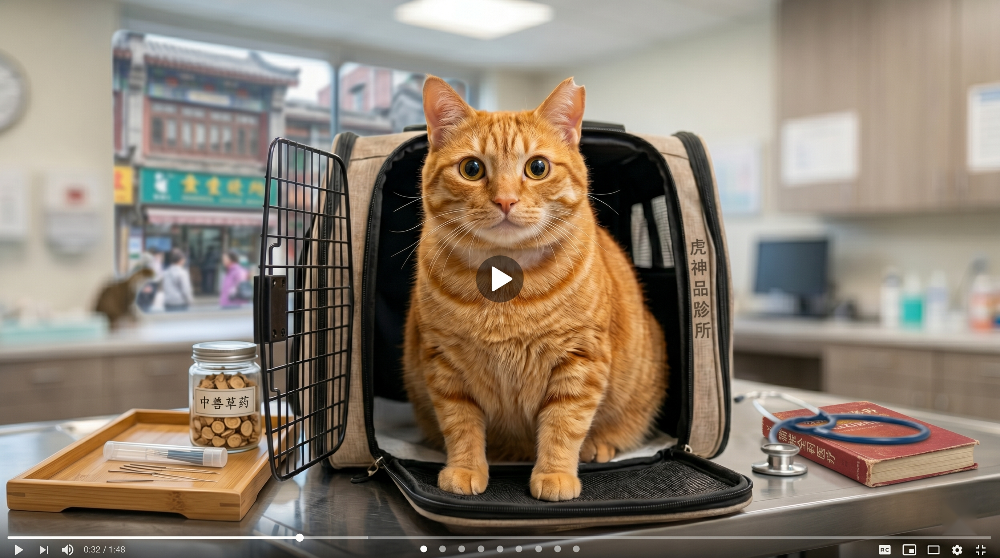

街头救助大橘 vlog｜它叫小橘啦🍊
家人们 今天朝阳公园又救一只大橘😭
当时它就一个人蹲在南门花坛后面 看到我也不躲 一看就是被丢的家养猫
没有项圈 没有牌子 我等了整整 20 分钟 没人来找 就把它带回救助站了
给它起名"小橘"啦🍊 真的好乖 抱起来一动不动
已经联系几个领养人 后续 vlog 会跟进～
真的呼吁大家 养猫一定要负责 别说丢就丢🙏
📍 朝阳公园南门

家人们 今天朝阳公园又救一只大橘😭
当时它就一个人蹲在南门花坛后面 看到我也不躲 一看就是被丢的家养猫
没有项圈 没有牌子 我等了整整 20 分钟 没人来找 就把它带回救助站了
给它起名"小橘"啦🍊 真的好乖 抱起来一动不动
已经联系几个领养人 后续 vlog 会跟进～
真的呼吁大家 养猫一定要负责 别说丢就丢🙏
为防止水军骚扰创作者，本号开启了「真粉验证」
请回答下面的问题（看过她笔记的姐妹一秒就能答出）
我最喜欢吃的水果是？
5.2w 条评论 · 仅显示热门